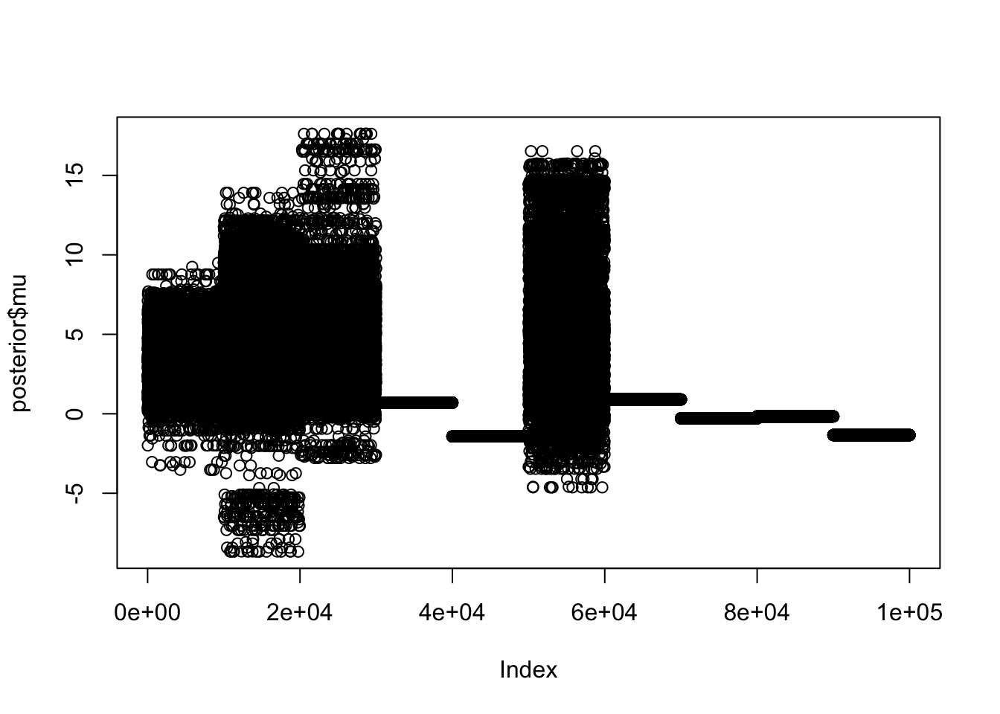
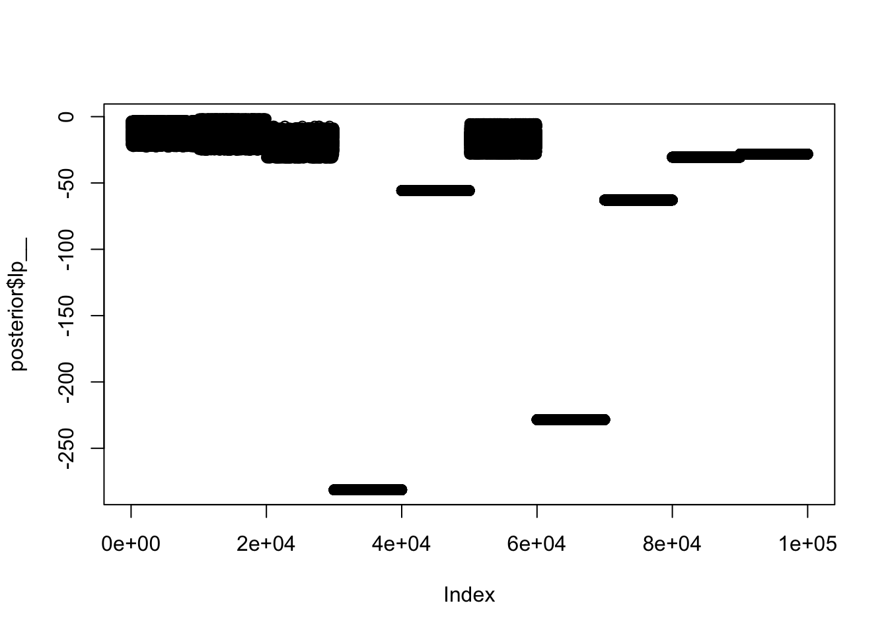
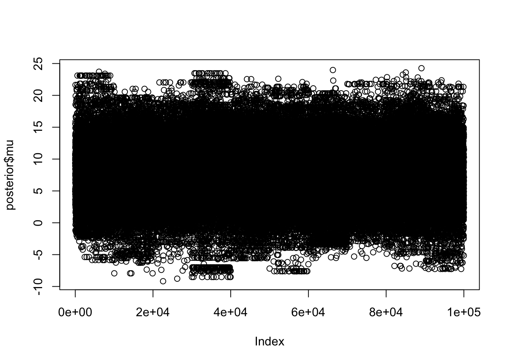
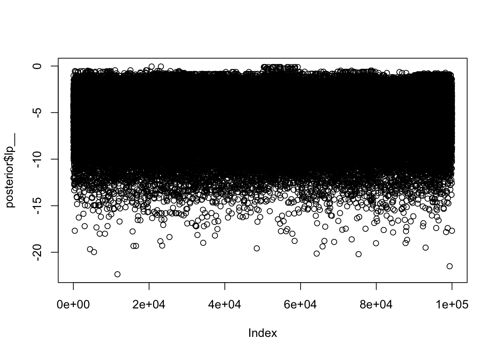
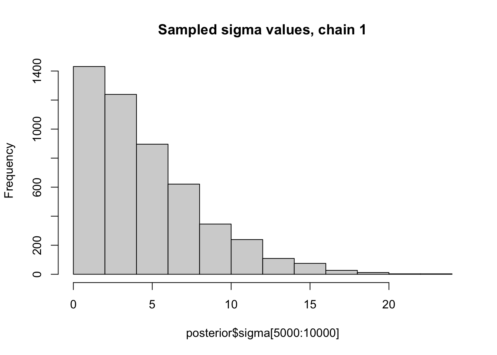
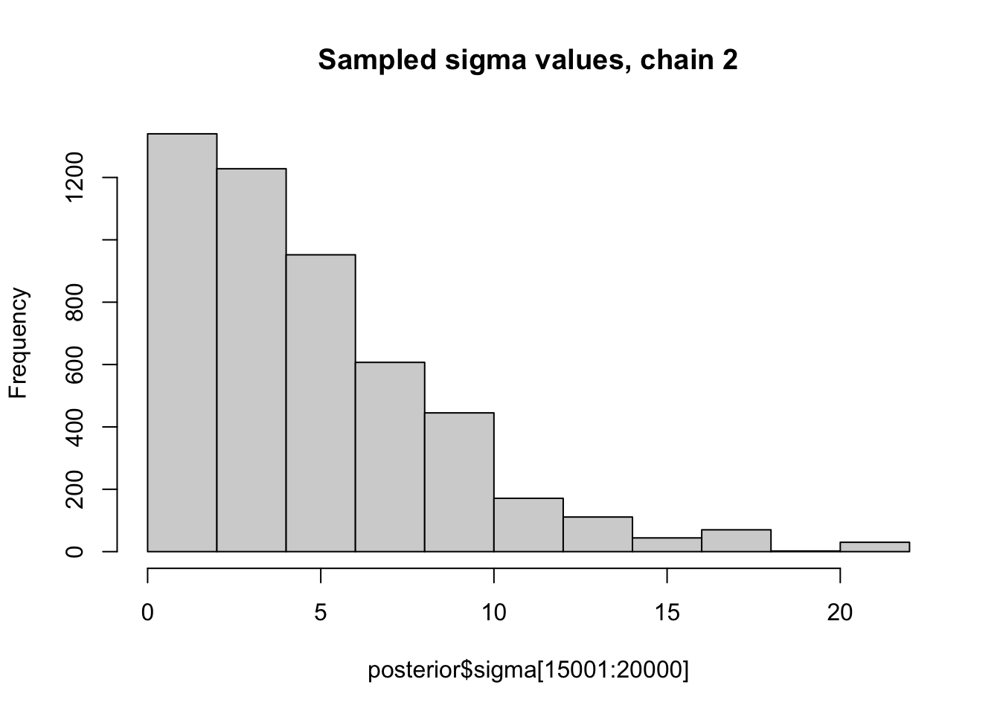
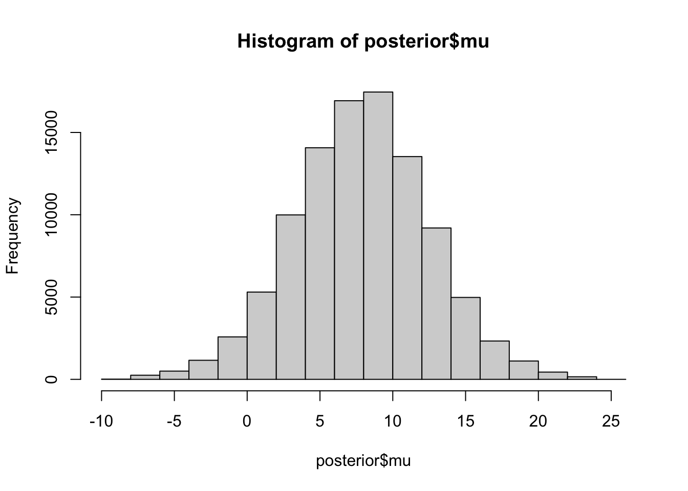
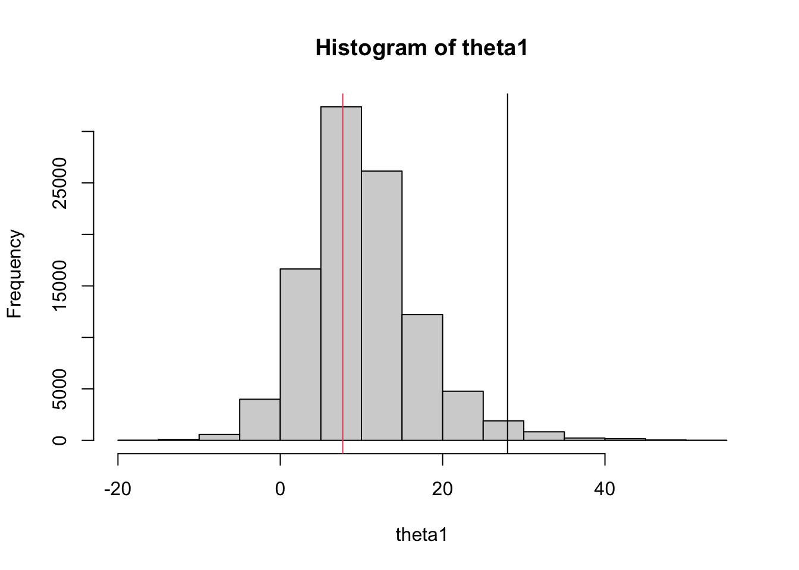

Last updated: 2022-04-26
Checks: 7 0
Knit directory: stat34800/analysis/
This reproducible R Markdown analysis was created with workflowr (version 1.7.0). The Checks tab describes the reproducibility checks that were applied when the results were created. The Past versions tab lists the development history.
Great! Since the R Markdown file has been committed to the Git repository, you know the exact version of the code that produced these results.
Great job! The global environment was empty. Objects defined in the global environment can affect the analysis in your R Markdown file in unknown ways. For reproduciblity it’s best to always run the code in an empty environment.
The command set.seed(20180411) was run prior to running the code in the R Markdown file. Setting a seed ensures that any results that rely on randomness, e.g. subsampling or permutations, are reproducible.
Great job! Recording the operating system, R version, and package versions is critical for reproducibility.
Nice! There were no cached chunks for this analysis, so you can be confident that you successfully produced the results during this run.
Great job! Using relative paths to the files within your workflowr project makes it easier to run your code on other machines.
Great! You are using Git for version control. Tracking code development and connecting the code version to the results is critical for reproducibility.
The results in this page were generated with repository version 32d1a1a. See the Past versions tab to see a history of the changes made to the R Markdown and HTML files.
Note that you need to be careful to ensure that all relevant files for the analysis have been committed to Git prior to generating the results (you can use wflow_publish or wflow_git_commit). workflowr only checks the R Markdown file, but you know if there are other scripts or data files that it depends on. Below is the status of the Git repository when the results were generated:
Ignored files:
Ignored: .Rhistory
Ignored: .Rproj.user/
Untracked files:
Untracked: analysis/currency_analysis.Rmd
Untracked: analysis/haar.Rmd
Untracked: analysis/stocks_analysis.Rmd
Untracked: data/normal_means.stan
Untracked: data/normal_means_reparam.stan
Note that any generated files, e.g. HTML, png, CSS, etc., are not included in this status report because it is ok for generated content to have uncommitted changes.
These are the previous versions of the repository in which changes were made to the R Markdown (analysis/stan_normal_means.Rmd) and HTML (docs/stan_normal_means.html) files. If you’ve configured a remote Git repository (see ?wflow_git_remote), click on the hyperlinks in the table below to view the files as they were in that past version.
| File | Version | Author | Date | Message |
|---|---|---|---|---|
| Rmd | 32d1a1a | Matthew Stephens | 2022-04-26 | workflowr::wflow_publish(“stan_normal_means.Rmd”) |
library("rstan")Warning: package 'rstan' was built under R version 4.1.1Loading required package: StanHeadersLoading required package: ggplot2Warning: package 'ggplot2' was built under R version 4.1.1rstan (Version 2.21.5, GitRev: 2e1f913d3ca3)For execution on a local, multicore CPU with excess RAM we recommend calling
options(mc.cores = parallel::detectCores()).
To avoid recompilation of unchanged Stan programs, we recommend calling
rstan_options(auto_write = TRUE)The R package rstan is designed to help implement MCMC sampling method for Bayesian models. You can read installation instructions here but you might find it is enough to run install.packages("rstan", repos = "https://cloud.r-project.org/", dependencies = TRUE).
The package makes use of a sophisticated version of Metropolis–Hastings algorithm known as Hamiltonian MCMC. The motivation for this choice, rather than (say) a simple random walk proposal, is to try to create a Markov Chain that converges quickly to its stationary distribution. (As we shall see, it does not always succeed).
Here we use stan to fit the normal means model with a normal prior: \[y_j | \theta_j, s_j^2 \sim N(\theta_j, s_j^2) \qquad j=1,\dots,J\] \[\theta_j \sim N(\mu, \sigma^2).\]
Here \(y_j\) and \(s_j\) are observed; the parameters of interest are \(\mu, \sigma^2, \theta_1,\dots, \theta_J\).
To fit this in a Bayesian way we need to specify priors on \(\mu\) and \(\sigma^2\). Here I choose to use fairly diffuse (spread out) priors on these parameters. Specifically: \[\mu \sim N(0,100^2)\] \[\sigma \sim \text{Half-Cauchy}(0,10).\] Note: HSalf-Cauchy denotes the Cauchy distribution truncated at 0. It has become a common choice for a ``default" prior on a scale parameter, as advocated in this paper. My expectation is that the data are likely to be fairly informative about these parameters, so the likelihood will tend to dominate these diffuse priors.
To apply stan we have to define this model in a file. Here I have saved the model in the file data/normal_means.stan, whose contents is as follows (as you can see there is some syntax to learn, but I think the file is reasonably self-explanatory):
cat(paste0(readLines("../data/normal_means.stan"), collapse="\n"))// This stan file defines the normal means model with normal prior
data {
int<lower=0> J; // number of schools
real y[J]; // estimated treatment effects
real<lower=0> s[J]; // standard error of effect estimates
}
parameters {
real mu; // population treatment effect
real<lower=0> sigma; // standard deviation in treatment effects
vector[J] theta; // deviation from mu by school
}
model {
mu ~ normal(0, 100); // a diffuse prior on the mean
sigma ~ cauchy(0, 10); // another diffuse prior (note that sigma is bounded so this is "half-cauchy prior")
theta ~ normal(mu, sigma);
y ~ normal(theta, s);
}Now we try running this smodel on the 8-schools example. First I set up the data:
schools_dat <- list(J = 8,
y = c(28, 8, -3, 7, -1, 1, 18, 12),
s = c(15, 10, 16, 11, 9, 11, 10, 18))Now run the model. I run 10 chains for 10000 iterations each. I get a lot of warnings because stan notices that the sampler is not working very well. We will see that in the results. (Also, I set warmup to 0 so we can see the full results; in practice you might want to use a warmup value to discard “burn-in”….)
fit <- stan(file = '../data/normal_means.stan', data = schools_dat, warmup = 0, iter = 10000, chains = 10)Trying to compile a simple C fileWarning: There were 79119 divergent transitions after warmup. See
https://mc-stan.org/misc/warnings.html#divergent-transitions-after-warmup
to find out why this is a problem and how to eliminate them.Warning: Examine the pairs() plot to diagnose sampling problemsWarning: The largest R-hat is 4.88, indicating chains have not mixed.
Running the chains for more iterations may help. See
https://mc-stan.org/misc/warnings.html#r-hatWarning: Bulk Effective Samples Size (ESS) is too low, indicating posterior means and medians may be unreliable.
Running the chains for more iterations may help. See
https://mc-stan.org/misc/warnings.html#bulk-essWarning: Tail Effective Samples Size (ESS) is too low, indicating posterior variances and tail quantiles may be unreliable.
Running the chains for more iterations may help. See
https://mc-stan.org/misc/warnings.html#tail-essHere I extract the posterior samples and plot the samples for \(\mu\); the 10 chains are concatenated here, and you can see the 10 different chains did not give the same result - indeed they are completely different, and some chains are not moving at all! Something is very wrong….
posterior <- extract(fit)
plot(posterior$mu)
Here is another view: we plot the trace plot of the “log-posterior” (ie the log-target density). [A nice thing about the log-target is that it provides a 1d summary of the fit, no matter how complex the model.] Again, we see the fit for different chains is very different.
plot(posterior$lp__)
It turns out that this simple example is surprisingly challenging for rstan. There is a lengthy investigation here
I don’t pretend to understand all the details of what is going wrong here, but I believe that ultimately the problems are caused by the parameters in the model being too dependent. In particular, every \(\theta_j\) depends on both \(\mu\) and \(\sigma^2\) (obvious from looking at the prior). We can reduce this dependence by “reparameterizing”; that is, specifying exactly the same model but in a different way. For example: \[y_j | \eta_j, \mu, \sigma, s_j^2 \sim N(\mu + \sigma \eta_j, s_j^2) \qquad j=1,\dots,J\] \[\eta_j \sim N(0,1).\] \[\mu \sim N(0,100^2)\] \[\sigma \sim \text{Half-Cauchy}(0,10).\] Notice that this is exactly the same model as before, but the parameters \(\eta_j\) have replaced the parameters \(\theta_j\) (the relationship being \(\theta_j = \mu +\sigma \eta_j\)). Further, in the prior all of the parameters \(\eta_j, \mu, \sigma\) are now independent.
Choosing a good parameterization is a bit of an art. Ideally one would like the parameters to be approximately independent in the posterior distribution, but this is usually difficult to ensure because the parameters usually all occur together in the likelihood (as here). In practice it is usually easier to reparameterize so that (many) parameters are independent in the prior, and this is often a good starting point. That is the approach we have taken here.
I have saved this new reparameterized model in the file data/normal_means_reparam.stan:
cat(paste0(readLines("../data/normal_means_reparam.stan"), collapse="\n"))// This stan file defines the normal means model with normal prior, but using a reparameterization
// where the parameters are independent in the prior
data {
int<lower=0> J; // number of schools
real y[J]; // estimated treatment effects
real<lower=0> s[J]; // standard error of effect estimates
}
parameters {
real mu; // population treatment effect
real<lower=0> sigma; // standard deviation in treatment effects
vector[J] eta; // unscaled deviation from mu by school
}
model {
mu ~ normal(0, 100); // a diffuse prior on the mean
sigma ~ cauchy(0, 10); // another diffuse prior (note that sigma is bounded so this is "half-cauchy prior")
eta ~ normal(0, 1);
y ~ normal(mu + sigma * eta, s);
}Now try running the model as before:
fit2 <- stan(file = '../data/normal_means_reparam.stan', data = schools_dat, warmup = 0, iter = 10000, chains = 10)Trying to compile a simple C fileWarning: There were 11878 divergent transitions after warmup. See
https://mc-stan.org/misc/warnings.html#divergent-transitions-after-warmup
to find out why this is a problem and how to eliminate them.Warning: Examine the pairs() plot to diagnose sampling problemsThis time you can see the 10 chains look much more similar in some initial plots:
posterior <- extract(fit2)
plot(posterior$mu)
plot(posterior$lp__)
Here we look at histograms of the posterior for \(\sigma\) from the first two chains, in each case discarding the first 5000 iterations as “burn-in”. You can see that, consistent with the maximum likelihood analysis for these data, the posterior mode for \(\sigma\) is at 0.
hist(posterior$sigma[5000:10000], main="Sampled sigma values, chain 1")
hist(posterior$sigma[15001:20000], main="Sampled sigma values, chain 2")
Here is a histogram of all the sampled values for \(\mu\) (we should probably remove burn-in from each chain but I did not do that). The posterior mean for \(\mu\) is 7.8747378, which is also close to the mle from the Empirical Bayes analysis.
hist(posterior$mu)
mean(posterior$mu)[1] 7.874738A nice thing about sampling is that one can easily compute sampled values for any functions of the parameters. Here we compute sampled values for \(\theta_1\) and plot a histogram. Note the shrinkage of the point estimate (28, black line) towards the prior mean (7.7, red line):
theta1 = posterior$mu + posterior$sigma * posterior$eta[,1]
hist(theta1)
abline(v=c(28,7.7),col=c(1,2))
sessionInfo()R version 4.1.0 Patched (2021-07-20 r80657)
Platform: aarch64-apple-darwin20 (64-bit)
Running under: macOS Monterey 12.2
Matrix products: default
BLAS: /Library/Frameworks/R.framework/Versions/4.1-arm64/Resources/lib/libRblas.0.dylib
LAPACK: /Library/Frameworks/R.framework/Versions/4.1-arm64/Resources/lib/libRlapack.dylib
locale:
[1] en_US.UTF-8/en_US.UTF-8/en_US.UTF-8/C/en_US.UTF-8/en_US.UTF-8
attached base packages:
[1] stats graphics grDevices utils datasets methods base
other attached packages:
[1] rstan_2.21.5 ggplot2_3.3.5 StanHeaders_2.21.0-7
loaded via a namespace (and not attached):
[1] tidyselect_1.1.1 xfun_0.28 bslib_0.3.1 purrr_0.3.4
[5] colorspace_2.0-2 vctrs_0.3.8 generics_0.1.2 htmltools_0.5.2
[9] stats4_4.1.0 loo_2.5.1 yaml_2.2.1 utf8_1.2.2
[13] rlang_0.4.12 pkgbuild_1.2.0 jquerylib_0.1.4 later_1.3.0
[17] pillar_1.6.4 glue_1.5.0 withr_2.4.2 DBI_1.1.1
[21] matrixStats_0.61.0 lifecycle_1.0.1 stringr_1.4.0 munsell_0.5.0
[25] gtable_0.3.0 workflowr_1.7.0 codetools_0.2-18 evaluate_0.14
[29] inline_0.3.19 knitr_1.36 callr_3.7.0 fastmap_1.1.0
[33] ps_1.6.0 httpuv_1.6.3 parallel_4.1.0 fansi_0.5.0
[37] highr_0.9 Rcpp_1.0.7 promises_1.2.0.1 scales_1.1.1
[41] RcppParallel_5.1.4 jsonlite_1.7.2 fs_1.5.0 gridExtra_2.3
[45] digest_0.6.28 stringi_1.7.5 processx_3.5.2 dplyr_1.0.7
[49] rprojroot_2.0.2 grid_4.1.0 cli_3.1.0 tools_4.1.0
[53] magrittr_2.0.2 sass_0.4.1 tibble_3.1.6 crayon_1.4.2
[57] whisker_0.4 pkgconfig_2.0.3 ellipsis_0.3.2 prettyunits_1.1.1
[61] rstudioapi_0.13 assertthat_0.2.1 rmarkdown_2.11 R6_2.5.1
[65] git2r_0.29.0 compiler_4.1.0